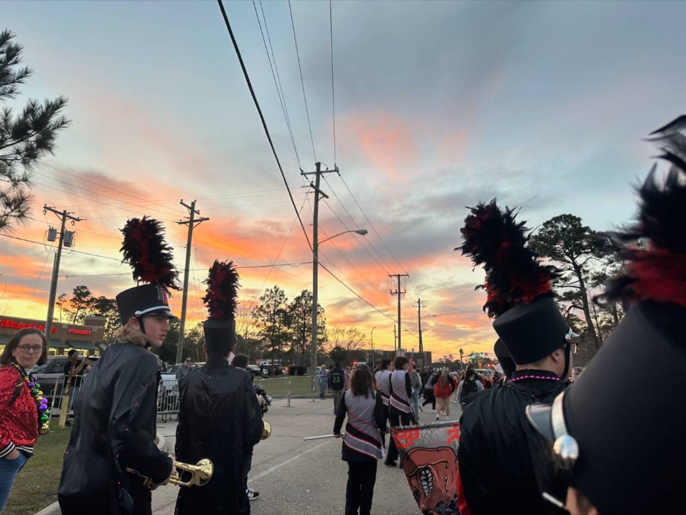

Woodwinds
Flutes
Johnavean Vazquez --> Captain
Brass
Trumpets
Cayden Flores --> Captain
Nate Rehmann --> Section Leader
Joseph McConnell
Alex Penton
Trombones
Ethan Frazier --> Captain
Sousaphones/Tubas
Kevin Warren --> Section Leader
Baritone
Tristan Daley
Blake Knight
Timothy Retif
Mellophones
Annabella Arrazate